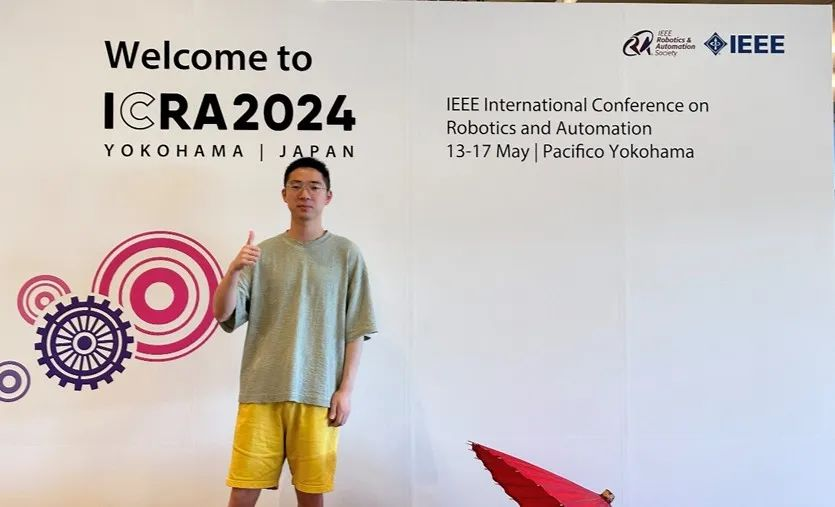
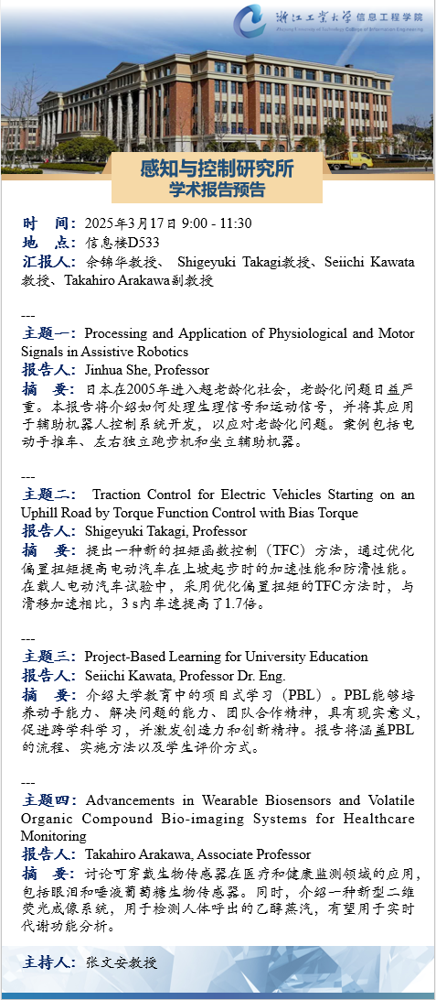
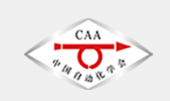
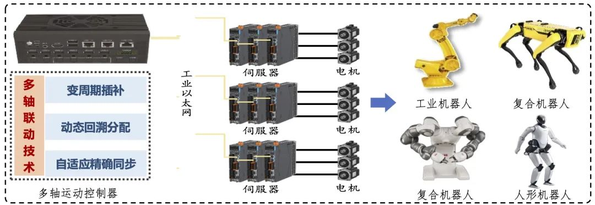
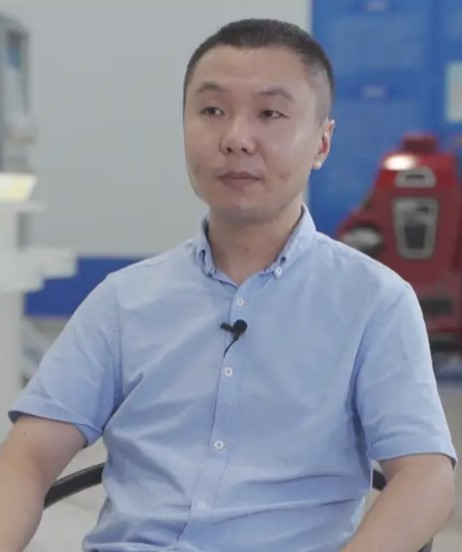
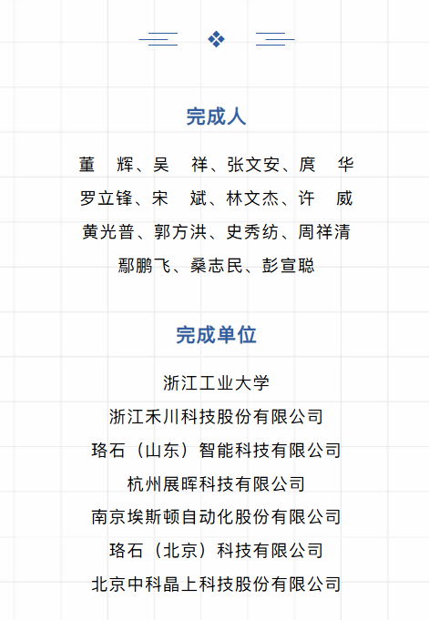
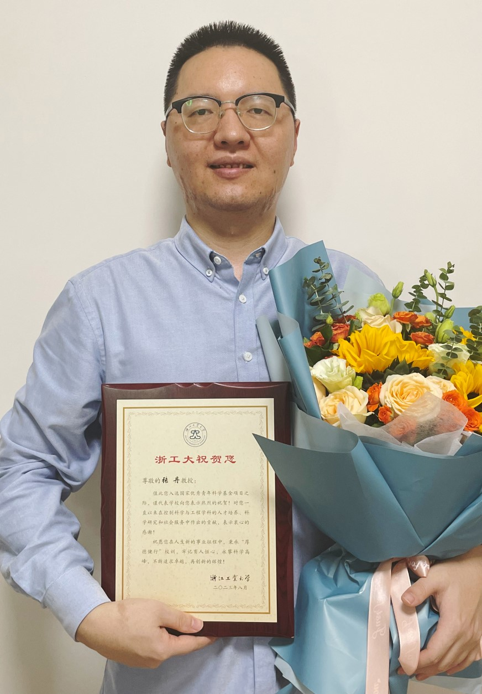
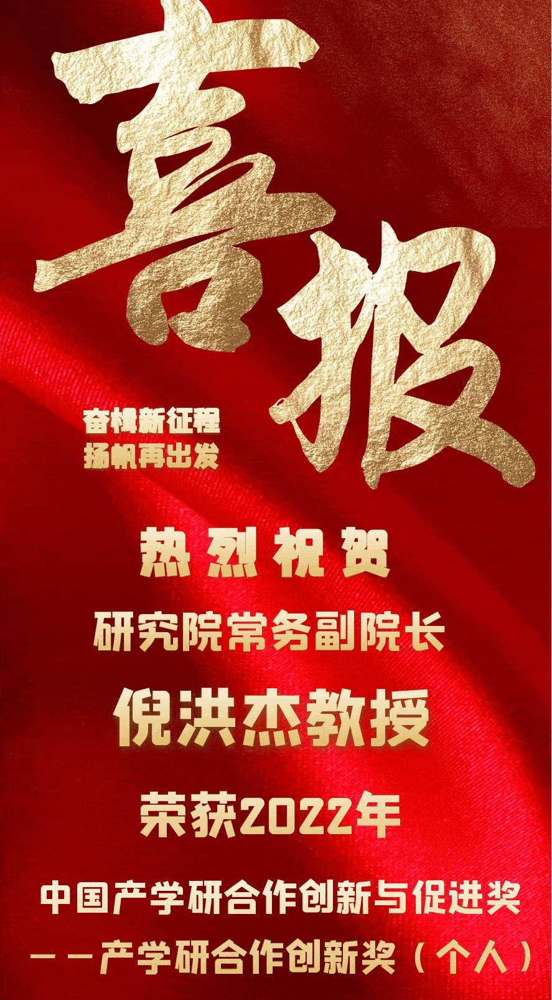

最新动态/News
/*


更多动态 >>

【喜讯】我院24届博士毕业生金哲豪入选欧盟"玛丽·居里学者"人才计划。

感知与控制研究所学术报告预告。

【新闻速递】2024中国自动化学会高等教育（本科、研究生）教学成果评价结果公示
【喜讯】我院以第一完成单位获得浙江省自然科学和科技进步一等奖各1项，自然科学二等奖2项，参与项目获得浙江省科技进步奖二等奖1项、三等奖1项，取得历史性突破。专用成果按规定公布。

【喜讯】信息工程学院董辉教授团队申报的发明专利"一种高精度变插补周期的多轴联动运动控制方法"荣获中国专利奖优秀奖，这是我校连续七年荣获中国专利奖优秀奖，历年累计获中国专利金奖2项、优秀奖21项。

【喜讯】郭方洪、吴祥指导的参赛队伍在第十九届全国大学生智能汽车竞赛中斩获大赛全国一等奖8项、二等奖1项，一等奖获奖数量位列全国高校并列第一!
【学术报告】浙江工业大学教授张文安：面向离散制造运动控制系统的工业软件设计与实现。
【新闻报道】董辉教授因在高校科技创新与地方成果转化方面的卓越成效，成功入选首批"浙江省最具创新力青年科技型企业家"，也是此次富阳唯一入选的企业家代表。
【喜讯】倪洪杰教授牵头完成的成果"移动台装备演出运动控制关键技术及应用"获中国自动化学会科技进步奖二等奖。

【喜讯】董辉教授牵头完成的成果"多轴机器人高性能运动控制关键技术研发及应用"荣获中国自动化学会科技进步奖一等奖。该项目在机器人高端控制器领域实现了自主安全可控的逐步替代。
【喜讯】董辉教授团队荣获第一届浙江省知识产权奖二等奖，在多轴运动控制领域提出了一种高精度变插补周期的多轴联动运动控制方法。

【喜讯】张丹教授获国家自然科学基金优秀青年科学基金项目资助！
【喜讯】我院院长董辉教授荣膺"2022中国自动化领域年度人物"。4月27日，2023中国自动化产业年会9大奖项获奖结果揭晓，我院院长董辉教授荣膺"2022中国自动化领域年度人物"称号。

【喜报】倪洪杰教授荣获2022年中国产学研合作创新与促进奖——产学研合作创新奖（个人）
【喜讯】张丹教授团队成果《复杂网络环境下的运动控制系统智能感知与协同控制理论》荣获2022中国自动化学会自然科学奖二等奖！
*/